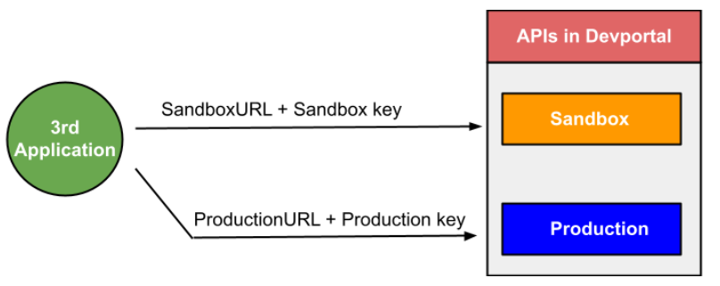
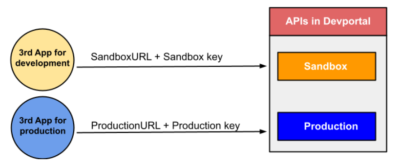

FromSandbox to Production¶
ในระหว่างการพัฒนาระบบทีมนักพัฒนาสามารถทำการเชื่อม API กับทาง mana ได้โดยการนำ Sandbox key (Subscriptions key) มาใช้งาน ซึ่งหากนักพัฒนาได้ทำการทดสอบเป็นที่เรียบร้อยแล้วและต้องการจะนำระบบออกสู่สาธารณะจะต้องทำการ Publich service ซึ่งต้องใช้ Production key ที่ได้มาจากการเรียก API ใน Devportal พร้อมทั้งทำการเปลี่ยน ฺBaseURL หรือทำ Configuration ให้พร้อมกับการทำงานบน Environment นั้นๆ ซึ่งจากที่กล่าวมาสามารถอธิบายได้ดังรูปด้านล่าง

ซึ่งจากภาพด้านบนเป็นการทำงานของหนึ่ง Appication กับ Environment ที่มากกว่าหนึ่ง ดังนั้นทางทีมงานของ mana จึงมีข้อแนะนำให้ทีมนักพัฒนาแยกการทำงานของ Appication ที่ใช้ทดสอบ กับ Appication ที่ใช้งานจริงออกจากกันและมีการกำหนดสิทธิในการเข้าถึงข้อมูลและทรัพยากรของระบบไว้อย่างชัดเจน ทั้งนี้เพื่อให้ Appication ไม่สามารถเข้าถึงข้อมูลข้ามกันได้ดังรูปตัวอย่างด้านล่าง
